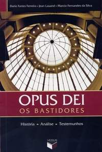

A Opus Dai
A prelazia pessoal do Vaticano, conhecida como Opus Dei, é uma organização católica
profundamente conservadora, que vem sendo objeto de controvérsias recentes, devido a
relatos de lavagem cerebral, coerção e uma prática religiosa conhecida como mortificação
corporal". A Opus Dei acabou de completar a construção de uma Sede Nacional em Nova
York, ao custo de 47 milhões de dólares

Opus Dai - Os Bastidores
O Opus Dei foi fundado no dia 2 de outubro de 1928 por São Josemaría Escrivá de Balaguer,
sacerdote espanhol canonizado em 2002. O termo latino "Opus Dei" significa "Obra de Deus".
No dia 28 de novembro de 1982 o papa João Paulo II através da Constituição Apostólica
Ut Sit[2] constituiu o Opus Dei como Prelazia Pessoal.
Segundo o fundador do Opus Dei, São Josemaria Escrivá de Balaguer, "o Opus Dei tem por
fim promover entre pessoas de todas as classes da sociedade o desejo da plenitude da vida
cristã no meio do mundo. Quer dizer, o Opus Dei pretende ajudar as pessoas que vivem no
mundo — o homem vulgar, o homem da rua — a levar uma vida plenamente cristã, sem
modificar seu modo normal de vida, nem seu trabalho ordinário, nem suas aspirações e anseios.
Por isso se pode dizer, como escrevi há muitos anos, que o Opus Dei é velho como o Evangelho
e, como o Evangelho, novo. É lembrar aos cristãos as maravilhosas palavras que se lêem no
Gênesis: Deus criou o homem para trabalhar. Detivemo-nos no exemplo de Cristo, que passou
quase toda a vida na terra trabalhando como artesão numa aldeia. O trabalho não é apenas um
dos mais altos valores humanos e meio com que os homens devem contribuir para o progresso
da sociedade; é também caminho de santificação.
O Opus Dei tem como lema "encontrar Deus no trabalho e na vida cotidiana". Procura a santificação
de cada cristão no meio do mundo, através do exercício profissional cotidiano e no cumprimento
dos deveres pessoais, familiares e sociais de cada um, de maneira a que cada indivíduo se torne
um fermento de intensa vida cristã em todos os ambientes em que se encontre inserido.
Para essa finalidade a prelazia proporciona os meios de formação espiritual e atendimento pastoral
aos próprios fiéis e também a muitas outras pessoas. Através desse atendimento pastoral, as pessoas
são estimuladas a colocar em prática os ensinamentos do Evangelho, mediante o exercício das
virtudes cristãs e a santificação do trabalho.
Sobre as críticas, os defensores do Opus Dei afirmam que a prelatura foi falsamente caluniada.
Segundo John Allen, vaticanista da CNN : "Há dois Opus Dei: um Opus Dei do mito e um Opus
Dei da realidade". John Allen também afirma que o Opus Dei recebe críticas da imprensa por
ser um sinal de contradição numa sociedade hedonista e auto-indulgente. Também questionam a
motivação e a confiabilidade de alguns críticos. Indicam que ex-membros de qualquer instituição
podem ter motivações psicológicas ou emocionais para criticar o grupo a que pertenciam, e
reivindicam que tais indivíduos estão propensos a criar histórias fictícias de atrociadade que
não correspondem a realidade.